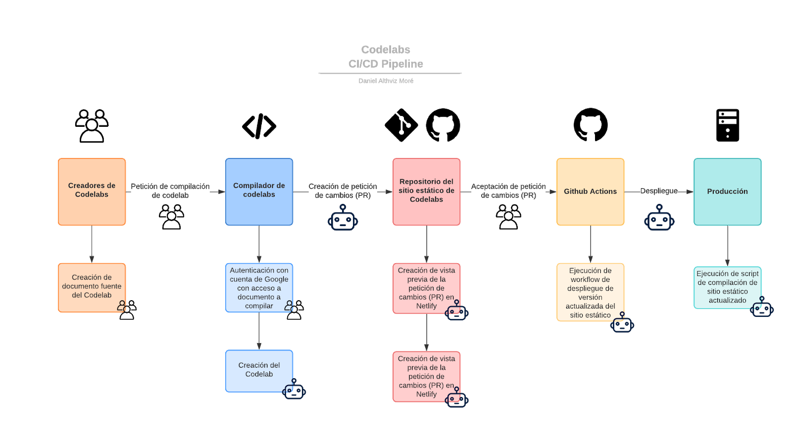

La siguiente documentación hace referencia a un pipeline que busca realizar la compilación de Codelabs y su despliegue en un sitio estático usando tags y categorías para su organización en subconjuntos/subsitios. El pipeline cuenta con una aplicación que permite realizar la compilación de los Codelabs usando las credenciales de Google de un usuario y dando la identificación (id) del documento en Google drive que sigue las convenciones de estilo de un Codelab. Luego de la compilación, los archivos resultantes son enviados a un repositorio mediante una petición de cambios (pull request/PR) para, luego de su aceptación, desplegar el sitio con los nuevos codelabs.
Así pues, dentro de este flujo de trabajo, dos pasos son manuales y el resto de acciones son automáticas. La primera acción, es enviar el requerimiento de compilación de un Codelab al usar la aplicación de compilación ingresando un identificador de un documento de Google. La segunda acción es la aceptación de la petición de cambios que se efectúa en el repositorio que contiene el código del sitio estático.
En la siguiente sección, se realiza una descripción más en detalle de cada uno de los pasos así como condiciones para poder realizar el uso del mismo y la compilación de los codelabs.
Algunos enlaces asociados a los elementos previamente mencionados:
Los pasos que componen la compilación se resumen en el siguiente gráfico:

Teniendo en cuenta la necesidad de aceptación de la petición de cambios, es necesario que el autor del codelab tenga permisos para aceptar su petición luego de una revisión y la comprobación de que su Codelab tiene el contenido correcto y se visualiza en la manera deseada.